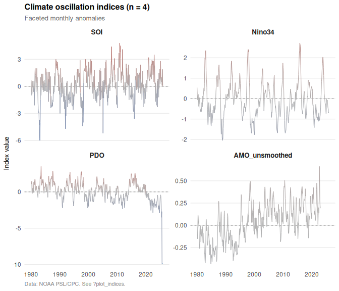
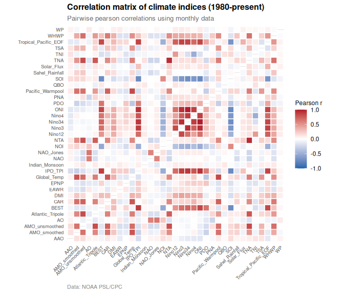

Planetary climate oscillation indices and teleconnections from NOAA PSL and CPC
oscillatoRs provides tools to download, process, and visualize 43 planetary climate oscillation indices from authoritative sources including NOAA Physical Sciences Laboratory (PSL) and Climate Prediction Center (CPC). The package includes pre-bundled datasets covering major climate modes: ENSO (SOI, Nino regions, ONI, MEI), Pacific multidecadal variability (PDO, IPO), Atlantic oscillations (AMO, TNA, TSA), polar oscillations (AO, AAO, NAO), Indian Ocean Dipole (DMI), stratospheric dynamics (QBO), and atmospheric teleconnections (PNA, WP, EP/NP). Provides functions for downloading updated data, creating publication-quality time series visualizations, and computing cross-index correlations.
What is inside
| Layer | Components | Count |
|---|---|---|
| Data access |
get_index, get_indices, update_indices
|
3 |
| Index registry |
list_indices, get_index_info
|
2 |
| Visualization |
plot_index, plot_indices, plot_correlation, plot_availability, theme_climate, category_colors
|
6 |
| ggplot2 integration |
scale_color_anomaly, scale_fill_anomaly
|
2 |
| Bundled datasets |
climate_monthly, climate_monthly_wide, climate_metadata
|
3 |
Installation
Install the development version from GitHub:
# install.packages("devtools")
devtools::install_github("robustecologies/oscillatoRs")Available indices
The package provides 43 climate oscillation indices organized by category:
| Category | Indices | Examples |
|---|---|---|
| ENSO | 9 | SOI, Nino34, ONI, MEI v2 |
| Teleconnection | 8 | NAO, PNA, AO, WP |
| Pacific multidecadal | 2 | PDO, IPO |
| Atlantic | 8 | AMO, TNA, TSA |
| Polar | 2 | AO, AAO |
| Indian Ocean | 1 | DMI |
| Atmospheric | 1 | QBO |
| Other | 5 | Solar flux, Global temp |
| Daily | 4 | NAO, AO, PNA, AAO |
Quick start
View available indices
list_indices()
#> # A tibble: 41 × 4
#> index description category resolution
#> <chr> <chr> <chr> <chr>
#> 1 NAO North Atlantic Oscillation (CPC) Teleconnection monthly
#> 2 NAO_Jones North Atlantic Oscillation (Jones/CRU) Teleconnection monthly
#> 3 PNA Pacific North American Index Teleconnection monthly
#> 4 WP Western Pacific Index Teleconnection monthly
#> 5 EPNP East Pacific/North Pacific Oscillation Teleconnection monthly
#> 6 EAWR Eastern Atlantic/Western Russia Teleconnection monthly
#> 7 NP North Pacific Pattern Teleconnection monthly
#> 8 NOI Northern Oscillation Index Teleconnection monthly
#> 9 PDO Pacific Decadal Oscillation Pacific multidecadal monthly
#> 10 IPO_TPI Tripole Index for Interdecadal Pacific Oscillation Pacific multidecadal monthly
#> # ℹ 31 more rowsLoad bundled data
data(climate_monthly)
head(climate_monthly)
#> # A tibble: 6 × 8
#> date year month value index description category source_url
#> <date> <int> <int> <dbl> <chr> <chr> <chr> <chr>
#> 1 1979-01-01 1979 1 0.209 AAO Antarctic Oscillation Polar https://psl.noaa.gov/data/correlation/aao.data
#> 2 1979-02-01 1979 2 0.356 AAO Antarctic Oscillation Polar https://psl.noaa.gov/data/correlation/aao.data
#> 3 1979-03-01 1979 3 0.899 AAO Antarctic Oscillation Polar https://psl.noaa.gov/data/correlation/aao.data
#> 4 1979-04-01 1979 4 0.678 AAO Antarctic Oscillation Polar https://psl.noaa.gov/data/correlation/aao.data
#> 5 1979-05-01 1979 5 0.724 AAO Antarctic Oscillation Polar https://psl.noaa.gov/data/correlation/aao.data
#> 6 1979-06-01 1979 6 1.7 AAO Antarctic Oscillation Polar https://psl.noaa.gov/data/correlation/aao.dataCompare multiple indices
plot_indices(
climate_monthly,
indices = c("SOI", "Nino34", "PDO", "AMO_unsmoothed"),
start_year = 1980
)
Download updated data
# Single index
nao <- get_index("NAO")
# Multiple indices
enso <- get_indices(category = "ENSO")
# All monthly indices in wide format
wide <- get_indices(resolution = "monthly", format = "wide")Correlation analysis
data(climate_monthly_wide)
plot_correlation(climate_monthly_wide, start_year = 1980)
Data sources
All data are from authoritative sources:
- NOAA Physical Sciences Laboratory (PSL): https://psl.noaa.gov/
- NOAA Climate Prediction Center (CPC): https://www.cpc.ncep.noaa.gov/
Documentation
-
vignette("oscillatoRs-user-guide"): Getting started guide -
vignette("climate-oscillations-theory"): Comprehensive theory of climate oscillations
Disclaimer
This package is the original creation of the author in all conceptual, theoretical, and design aspects. Implementation was assisted by Anthropic’s Claude Code v.2 (Opus 4.5) to streamline package development. All original ideas, creativity, and scientific contributions belong to the author, who maintains full responsibility for the package’s correctness and reliability. All the code has been thoroughly tested, and users are encouraged to report any issues through the package’s issue tracker.